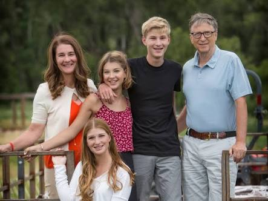

Born: October 28, 1955 (age 64) in Seattle, Washington, U.S.
Occupation: Software developer, investor, entrepreneur and philanthropist
Years active: 1975–present
Known for: Co-founder of Microsoft
Net worth: US$97.8 billion (March 2020)
- Title
- Co-chairman and co-founder of the Bill & Melinda Gates Foundation
- Chairman and founder of Branded Entertainment Network
- Chairman and co-founder of TerraPower
- Chairman and founder of Cascade Investment
- Technology advisor at Microsoft
Spouse(s): Melinda French (m. 1994)
Children: 3
- Parents
- Bill Gates Sr. (father)
- Mary Maxwell Gates (mother)
Early life
Gates was born in Seattle, Washington, on October 28, 1955. He is the son of William H. Gates Sr.[b] (b. 1925) and Mary Maxwell Gates (1929–1994). His ancestry includes English, German, and Irish/Scots-Irish. His father was a prominent lawyer, and his mother served on the board of directors for First Interstate BancSystem and the United Way of America. Gates' maternal grandfather was J. W. Maxwell, a national bank president. Gates has an older sister Kristi (Kristianne) and a younger sister Libby. He is the fourth of his name in his family but is known as William Gates III or "Trey" (i.e., three) because his father had the "II" suffix. The family lived in the Sand Point area of Seattle in a home that was damaged by a rare tornado when Gates was seven years old. Early in his life, Gates observed that his parents wanted him to pursue a law career. When he was young, his family regularly attended a church of the Congregational Christian Churches, a Protestant Reformed denomination. Gates was small for his age and was bullied as a child. He preferred to stay in his room where he would shout "I'm thinking" when his mother asked what he was doing. The family encouraged competition; one visitor reported that "it didn't matter whether it was hearts or pickleball or swimming to the dock; there was always a reward for winning and there was always a penalty for losing".
At 13, he enrolled in the private Lakeside prep school, and he wrote his first software program. When he was in the eighth grade, the Mothers' Club at the school used proceeds from Lakeside School's rummage sale to buy a Teletype Model 33 ASR terminal and a block of computer time on a General Electric (GE) computer for the students.[30] Gates took an interest in programming the GE system in BASIC, and he was excused from math classes to pursue his interest. He wrote his first computer program on this machine, an implementation of tic-tac-toe that allowed users to play games against the computer. Gates was fascinated by the machine and how it would always execute software code perfectly.[
After the Mothers Club donation was exhausted, he and other students sought time on systems including DEC PDP minicomputers. One of these systems was a PDP-10 belonging to Computer Center Corporation (CCC) which banned for the summer Gates, Paul Allen, Ric Weiland, and Gates' best friend and first business collaborator Kent Evans after it caught them exploiting bugs in the operating system to obtain free computer time.
The four students had formed the Lakeside Programmers Club to make money. At the end of the ban, they offered to find bugs in CCC's software in exchange for extra computer time. Rather than use the system remotely via Teletype, Gates went to CCC's offices and studied source code for various programs that ran on the system, including Fortran, Lisp, and machine language. The arrangement with CCC continued until 1970 when the company went out of business. The following year, a Lakeside teacher enlisted Gates and Evans to automate the school's class-scheduling system, providing them computer time and royalties in return. The two friends wrote the school's student information system software to schedule students in classes, and Gates modified the code so that he was placed in classes with "a disproportionate number of interesting girls." The duo worked diligently in order to have the program ready for their senior year. Towards the end of their junior year, Evans was killed in a mountain climbing accident, which Gates has described as one of the saddest days of his life. Gates then turned to Allen who helped him finish the system for Lakeside.
At 17, Gates formed a venture with Allen called Traf-O-Data to make traffic counters based on the Intel 8008 processor. In 1972, he served as a congressional page in the House of Representatives. He was a National Merit Scholar when he graduated from Lakeside School in 1973. He scored 1590 out of 1600 on the Scholastic Aptitude Tests (SAT) and enrolled at Harvard College in the autumn of 1973. He chose a pre-law major but took mathematics and graduate level computer science courses. While at Harvard, he met fellow student Steve Ballmer. Gates left Harvard after two years while Ballmer stayed and graduated magna cum laude. Ballmer succeeded Gates as Microsoft's CEO years later and maintained that position from 2000 until his resignation in 2014.
Gates devised an algorithm for pancake sorting as a solution to one of a series of unsolved problems presented in a combinatorics class by professor Harry Lewis. His solution held the record as the fastest version for over 30 years; its successor is faster by only 1%. His solution was formalized in a published paper in collaboration with Harvard computer scientist Christos Papadimitriou.
Gates did not have a definite study plan while he was a student at Harvard, and he spent a lot of time using the school's computers. He remained in contact with Paul Allen, and he joined him at Honeywell during the summer of 1974. The MITS Altair 8800 was released the following year based on the Intel 8080 CPU, and Gates and Allen saw this as the opportunity to start their own computer software company. Gates dropped out of Harvard at this time. He had talked over this decision with his parents, who were supportive of him after seeing how much he wanted to start his own company. He explained his decision to leave Harvard: "if things hadn't worked out, I could always go back to school. I was officially on leave."
Microsoft
MITS Altair 8800 Computer with 8-inch (200 mm) floppy disk system, of which the first programming language for the machine was Microsoft's founding product, the Altair BASIC
Gates read the January 1975 issue of Popular Electronics which demonstrated the Altair 8800, and he contacted Micro Instrumentation and Telemetry Systems (MITS) to inform them that he and others were working on a BASIC interpreter for the platform. In reality, Gates and Allen did not have an Altair and had not written code for it; they merely wanted to gauge MITS's interest. MITS president Ed Roberts agreed to meet them for a demonstration, and over the course of a few weeks they developed an Altair emulator that ran on a minicomputer, and then the BASIC interpreter. The demonstration was held at MITS's offices in Albuquerque, New Mexico; it was a success and resulted in a deal with MITS to distribute the interpreter as Altair BASIC. MITS hired Allen, and Gates took a leave of absence from Harvard to work with him at MITS in November 1975. Allen named their partnership "Micro-Soft", a combination of "microcomputer" and "software", and their first office was in Albuquerque. The first employee Gates and Allen hired was their high school collaborator Ric Weiland. They dropped the hyphen within a year and officially registered the trade name "Microsoft" with the Secretary of the State of New Mexico on November 26, 1976. Gates never returned to Harvard to complete his studies.
Microsoft's Altair BASIC was popular with computer hobbyists, but Gates discovered that a pre-market copy had leaked out and was being widely copied and distributed. In February 1976, he wrote an Open Letter to Hobbyists in the MITS newsletter in which he asserted that more than 90% of the users of Microsoft Altair BASIC had not paid Microsoft for it and the Altair "hobby market" was in danger of eliminating the incentive for any professional developers to produce, distribute, and maintain high-quality software. This letter was unpopular with many computer hobbyists, but Gates persisted in his belief that software developers should be able to demand payment. Microsoft became independent of MITS in late 1976, and it continued to develop programming language software for various systems. The company moved from Albuquerque to Bellevue, Washington on January 1, 1979.
Gates said that he personally reviewed and often rewrote every line of code that the company produced in its first five years. As the company grew he transitioned to a manager role, then an executive.
IBM partnership
IBM, the leading supplier of computer equipment to commercial enterprises at the time, approached Microsoft in July 1980 concerning software for its upcoming personal computer, the IBM PC. IBM first proposed that Microsoft write the BASIC interpreter. IBM's representatives also mentioned that they needed an operating system, and Gates referred them to Digital Research (DRI), makers of the widely used CP/M operating system. IBM's discussions with Digital Research went poorly, however, and they did not reach a licensing agreement. IBM representative Jack Sams mentioned the licensing difficulties during a subsequent meeting with Gates and asked if Microsoft could provide an operating system. A few weeks later, Gates and Allen proposed using 86-DOS, an operating system similar to CP/M, that Tim Paterson of Seattle Computer Products (SCP) had made for hardware similar to the PC. Microsoft made a deal with SCP to be the exclusive licensing agent of 86-DOS, and later the full owner. Microsoft employed Paterson to adapt the operating system for the PC and delivered it to IBM as PC DOS for a one-time fee of $50,000.
Rather than the contract itself, which earned Microsoft a relatively small fee, the prestige brought to Microsoft by IBM's adoption of their operating system was the origin of Microsoft's transformation from a small business to the World's leading software company. Gates had not offered to transfer the copyright on the operating system to IBM because he believed that other personal computer makers would clone IBM's PC hardware. They did, making the IBM-compatible PC, running DOS, a de facto standard. The sales of MS-DOS (the version of DOS sold to customers other than IBM) made Microsoft a major player in the industry. The press quickly identified Microsoft as being very influential on the IBM PC. PC Magazine asked if Gates was "the man behind the machine?".
Gates oversaw Microsoft's company restructuring on June 25, 1981, which re-incorporated the company in Washington state and made Gates the president and chairman of the board, with Paul Allen as vice president and vice chairman. In early 1983, Allen left the company after receiving a Hodgkin lymphoma diagnosis, effectively ending the formal business partnership between Gates and Allen, which had been strained months prior due to a contentious dispute over Microsoft equity. Later in the decade, Gates repaired his relationship with Allen and together the two donated millions to their childhood school Lakeside. They remained friends until Allen's death in October 2018.
Windows
Microsoft launched its first retail version of Microsoft Windows on November 20, 1985. In August of the following year, the company struck a deal with IBM to develop a separate operating system called OS/2. Although the two companies successfully developed the first version of the new system, the partnership deteriorated due to mounting creative differences.
Management style
Gates delivers a speech at the World Economic Forum in Switzerland, January 2008
Gates had primary responsibility for Microsoft's product strategy from the company's founding in 1975 until 2006. He gained a reputation for being distant from others; an industry executive complained in 1981 that "Gates is notorious for not being reachable by phone and for not returning phone calls." An Atari executive recalled that he showed Gates a game and defeated him 35 of 37 times. When they met again a month later, Gates "won or tied every game. He had studied the game until he solved it. That is a competitor".
Gates met regularly with Microsoft's senior managers and program managers, and the managers described him as being verbally combative. He also berated them for perceived holes in their business strategies or proposals that placed the company's long-term interests at risk. He interrupted presentations with such comments as "that's the stupidest thing I've ever heard" and "why don't you just give up your options and join the Peace Corps?" The target of his outburst would then have to defend the proposal in detail until Gates was fully convinced. When subordinates appeared to be procrastinating, he was known to remark sarcastically, "I'll do it over the weekend."
During Microsoft's early years, Gates was an active software developer, particularly in the company's programming language products, but his primary role in most of the company's history was as a manager and executive. He has not officially been on a development team since working on the TRS-80 Model 100, but he wrote code that shipped with the company's products as late as 1989. Jerry Pournelle wrote in 1985 when Gates announced Microsoft Excel: "Bill Gates likes the program, not because it's going to make him a lot of money (although I'm sure it will do that), but because it's a neat hack."
On June 15, 2006, Gates announced that he would transition out of his role at Microsoft to dedicate more time to philanthropy. He divided his responsibilities between two successors when he placed Ray Ozzie in charge of management and Craig Mundie in charge of long-term product strategy.
Philanthropy
Bill and Melinda Gates Foundation
Gates with Bono, Queen Rania of Jordan, former British Prime Minister Gordon Brown, President Umaru Yar'Adua of Nigeria and others during the Annual Meeting 2008 of the World Economic Forum
Gates studied the work of Andrew Carnegie and John D. Rockefeller, and donated some of his Microsoft stock in 1994 to create the "William H. Gates Foundation." In 2000, Gates and his wife combined three family foundations and Gates donated stock valued at $5 billion to create the charitable Bill & Melinda Gates Foundation, which was identified by the Funds for NGOs company in 2013, as the world's wealthiest charitable foundation, with assets reportedly valued at more than $34.6 billion. The foundation allows benefactors to access information that shows how its money is being spent, unlike other major charitable organizations such as the Welcome Trust. Gates, through his foundation, also donated $20 million to Carnegie Mellon University for a new building to be named Gates Center for Computer Science which opened in 2009.
Gates has credited the generosity and extensive philanthropy of David Rockefeller as a major influence. Gates and his father met with Rockefeller several times, and their charity work is partly modeled on the Rockefeller family's philanthropic focus, whereby they are interested in tackling the global problems that are ignored by governments and other organizations. As of 2007, Bill and Melinda Gates were the second-most generous philanthropists in America, having given over $28 billion to charity; the couple plan to eventually donate 95% of their wealth to charity.
The foundation is organized into four program areas: Global Development Division, Global Health Division, United States Division, and Global Policy & Advocacy Division. The foundation supports the use of genetically modified organisms in agricultural development. Specifically, the foundation is supporting the International Rice Research Institute in developing Golden Rice, a genetically modified rice variant used to combat vitamin A deficiency. The goal of the foundation is to provide 120 million women and girls, in the poorest countries, with high-quality contraceptive information and services, with the longer-term goal of universal access to voluntary family planning. In 2007, the Los Angeles Times criticized the foundation for investing its assets in companies that have been accused of worsening poverty, pollution and pharmaceutical firms that do not sell to developing countries. Although the foundation announced a review of its investments to assess social responsibility, it was subsequently canceled and upheld its policy of investing for maximum return, while using voting rights to influence company practices. In 2014, protests in Vancouver occurred when Gates decided to donate $50 million to UNAIDS through the Foundation for the purpose of mass circumcision in Zambia and Swaziland.
Recognitions
In 1987, Gates was listed as a billionaire in Forbes magazine's 400 Richest People in America issue. He was worth $1.25 billion and was the world's youngest self-made billionaire. Since 1987, Gates has been included in the Forbes The World's Billionaires list and was the wealthiest from 1995 to 1996, 1998 to 2007, 2009, and has been since 2014. Gates was number one on the Forbes 400 list from 1993 through to 2007, 2009, and 2014 through 2017.
Time magazine named Gates one of the 100 people who most influenced the 20th century, as well as one of the 100 most influential people of 2004, 2005, and 2006.
Time also collectively named Gates, his wife Melinda and U2's lead singer Bono as the 2005 Persons of the Year for their humanitarian efforts. In 2006, he was voted eighth in the list of "Heroes of our time".
Gates was listed in the Sunday Times power list in 1999, named CEO of the year by Chief Executive Officers magazine in 1994, ranked number one in the "Top 50 Cyber Elite" by Time in 1998, ranked number two in the Upside Elite 100 in 1999, and was included in The Guardian as one of the "Top 100 influential people in media" in 2001.
Gates was elected Member of the US National Academy of Engineering in 1996 "for contributions to the founding and development of personal computing".
He was named Honorary Member of the American Library Association in 1998.
He was elected a foreign member of the Chinese Academy of Engineering in 2017.
According to Forbes, Gates was ranked as the fourth most powerful person in the world in 2012, up from fifth in 2011.
In 1994, he was honored as the 20th Distinguished Fellow of the British Computer Society (DFBCS).
In 1999, Gates received New York Institute of Technology's President's Medal.
Gates has received honorary doctorates from Nyenrode Business Universiteit (2003), KTH Royal Institute of Technology (2002), Waseda University (2005), Tsinghua University (2007), Harvard University (2007), the Karolinska Institute (2007), and Cambridge University (2009).
He was also made an honorary trustee of Peking University in 2007.
Gates was made an Honorary Knight Commander of the Order of the British Empire (KBE) by Queen Elizabeth II in 2005.
In November 2006, he was awarded the Placard of the Order of the Aztec Eagle, together with his wife Melinda who was awarded the Insignia of the same order, both for their philanthropic work around the world in the areas of health and education, particularly in Mexico, and specifically in the program "Un país de lectores".
Gates received the 2010 Bower Award for Business Leadership from The Franklin Institute for his achievements at Microsoft and his philanthropic work.
Also in 2010, he was honored with the Silver Buffalo Award by the Boy Scouts of America, its highest award for adults, for his service to youth.
In 2002, Bill and Melinda Gates received the Jefferson Award for Greatest Public Service Benefiting the Disadvantaged.
He was given the 2006 James C. Morgan Global Humanitarian Award from the Tech Awards.
In 2015 Gates, along with his wife Melinda, received the Padma Bhushan, India's third-highest civilian award for their social work in the country.
Barack Obama honored Bill and Melinda Gates with the Presidential Medal of Freedom for their philanthropic efforts in 2016 and François Hollande awarded Bill and Melinda in the following year with France's highest national order – as Commander of the Legion of Honour for their charity efforts.
Entomologists named Bill Gates' flower fly, Eristalis gatesi, in his honor in 1997.
Family life

Gates married Melinda French on a golf course on the Hawaiian island of Lanai on January 1, 1994. They have three children. The family resides in Xanadu 2.0, an earth-sheltered mansion in the side of a hill overlooking Lake Washington in Medina, Washington. In 2009, property taxes on the mansion were reported to be US$1.063 million, on a total assessed value of US$147.5 million. The 66,000-square-foot (6,100 m2) estate has a 60-foot (18 m) swimming pool with an underwater music system, as well as a 2,500-square-foot (230 m2) gym and a 1,000-square-foot (93 m2) dining room.
In an interview with Rolling Stone, Gates stated in regard to his faith: "The moral systems of religion, I think, are super important. We've raised our kids in a religious way; they've gone to the Catholic church that Melinda goes to and I participate in. I've been very lucky, and therefore I owe it to try and reduce the inequity in the world. And that's kind of a religious belief. I mean, it's at least a moral belief."
Gates also said: "I agree with people like Richard Dawkins that mankind felt the need for creation myths. Before we really began to understand disease and the weather and things like that, we sought false explanations for them. Now science has filled in some of the realm – not all – that religion used to fill. But the mystery and the beauty of the world is overwhelmingly amazing, and there's no scientific explanation of how it came about. To say that it was generated by random numbers, that does seem, you know, sort of an uncharitable view [laughs]. I think it makes sense to believe in God, but exactly what decision in your life you make differently because of it, I don't know."
Gates purchased the Codex Leicester, a collection of scientific writings by Leonardo da Vinci, for US$30.8 million at an auction in 1994. Gates is an avid reader, and the ceiling of his large home library is engraved with a quotation from The Great Gatsby. He also enjoys playing bridge, tennis, and golf. Gates' days are planned for him on a minute-by-minute basis, similar to the U.S. President's schedule. Despite his wealth and extensive business travel, Gates flew coach in commercial aircraft until 1997, when he bought a private jet.
In 1999, his wealth briefly surpassed US$101 billion. Since 2000, the nominal value of his Microsoft holdings has declined due to a fall in Microsoft's stock price after the dot-com bubble burst and the multi-billion dollar donations he has made to his charitable foundations. In May 2006, Gates remarked that he wished that he were not the richest man in the world because he disliked the attention it brought.[166] In March 2010, Gates was the second wealthiest person behind Carlos Slim, but regained the top position in 2013, according to the Bloomberg Billionaires List. Slim retook the position again in June 2014[169] (but then lost the top position back to Gates). Between 2009 and 2014, his wealth doubled from US$40 billion to more than US$82 billion. In October 2017, Gates was surpassed by Amazon founder Jeff Bezos as the richest person in the world. On November 15, 2019, he once again became the richest person in the world after a 48% increase in Microsoft shares, surpassing Bezos. Gates told the BBC, "I've paid more tax than any individual ever, and gladly so ... I've paid over $6 billion in taxes." He is a proponent of higher taxes, particularly for the rich.
Gates has held the top spot on the list of The World's Billionaires for 18 out of the past 23 years. Gates has several investments outside Microsoft, which in 2006 paid him a salary of US$616,667 and US$350,000 bonus totalling US$966,667. In 1989, he founded Corbis, a digital imaging company. In 2004, he became a director of Berkshire Hathaway, the investment company headed by long-time friend Warren Buffett. In 2016, he was discussing his gaming habits when he revealed that he was color-blind.